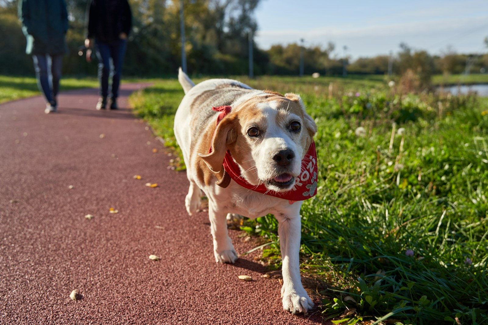
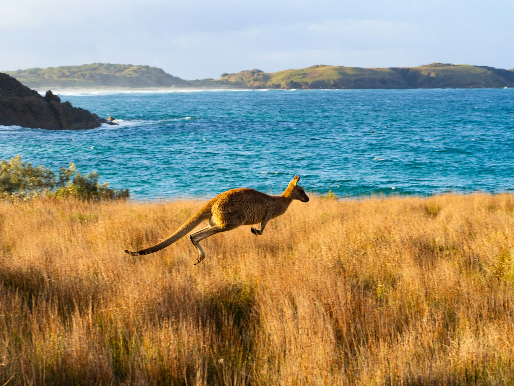
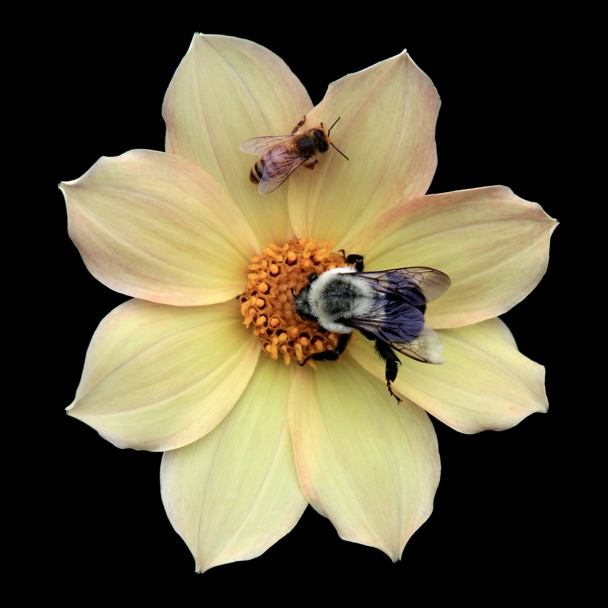
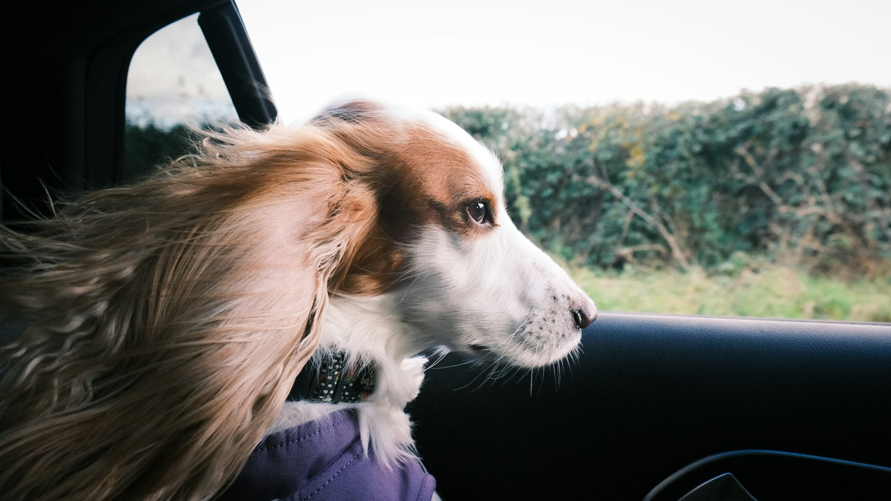

Numero 3 · 9 novembre 2026
Il guinzaglio che tirava verso un albero
Il numero così come è arrivato agli iscritti.
Buongiorno
Una cagnolina di quattordici anni che si ostina a tirare verso un albero. Un canguro avvistato in mezzo al mare. Una ragazza che pianta giardini per le api pensando a suo fratello. E un signore che passa ventuno ore in macchina per un cane anziano visto in un video.
Questa settimana le storie cominciano tutte con qualcuno che si accorge di qualcosa. Tutte finiscono bene.
Cinque minuti di storie vere. Buon lunedì.
La storia della settimana
Marta tira il guinzaglio

Foto di repertorio · Barnabas Davoti / Unsplash
Lunedì 12 ottobre, verso le quattro e un quarto del pomeriggio, a Cinisello Balsamo, alle porte di Milano. Sandra porta a spasso Marta, una meticcia che ha adottato da poco e che, secondo le testate locali, ha quattordici anni. È una passeggiata come tante, nella zona verde tra via Monte Ortigara e via Pasubio.
A un certo punto Marta cambia direzione. Tira il guinzaglio verso un albero, con un'insistenza che non è da lei. Sandra la segue. Ai piedi dell'albero c'è un sacchetto. Dentro, un neonato.
Sandra non ha il telefono con sé. Ferma una donna che ha appena parcheggiato e le chiede di chiamare il 112. Un'altra passante si toglie la felpa e ci avvolge il bambino. In pochi minuti arrivano i soccorsi.
Il piccolo, circa quattro chili, viene portato all'ospedale Niguarda in codice rosso. Ha un principio di ipotermia e ha bisogno di aiuto per respirare. Nei giorni successivi i medici fanno sapere che respira da solo ed è fuori pericolo. Sulle circostanze dell'abbandono sta indagando la polizia.
Marta era stata adottata quando molti cani della sua età restano in rifugio. Quel pomeriggio, a guardare dove nessuno guardava, è stata lei.
Fonti: Radio Lombardia, 13 ottobre 2026 — link · MilanoToday, intervista a Sandra — link · Open, 14 ottobre 2026 — link
Le buone nuove
Il canguro a tre chilometri dalla riva

Foto di repertorio · Simone Muzzi / Unsplash
Alle sette del mattino una barca della Van Dorn, una ditta di sub di Port Lincoln, nell'Australia del Sud, attraversa la Boston Bay per un'ispezione agli allevamenti di pesce. Lo skipper Ryan Smith vede qualcosa nell'acqua e rallenta. «Credo ci sia un canguro in mare», dice. Sono a circa tre chilometri dalla costa.
Fanno inversione. Il sub e agricoltore Jake Murray abbassa il portellone di poppa a pelo d'acqua e solleva a bordo l'animale, un maschio esausto e fradicio. Lo tiene sotto le zampe anteriori e il canguro, racconta, «sembrava si stesse facendo un pisolino». A bordo c'è anche Miguel Villarroel, sub delle Galápagos, che un canguro non l'aveva mai visto.
Lo riportano a terra e lo lasciano su una spiaggia. Si riposa un po', poi se ne va saltando. Come sia finito così al largo, nessuno lo sa.
Fonti: Emma Pedler, ABC News, 21 ottobre 2026 — link · Divernet — link
I giardini di Gunisha

Foto di repertorio · John Cardamone / Unsplash
A Ludhiana, città industriale del Punjab, in India, Gunisha Kaur ha un fratello più piccolo autistico. Ha notato che all'aperto, in mezzo alle piante, lui si calmava. Nel marzo 2023, a tredici anni, ha fondato Buzzing Blooms: giardini senza prodotti chimici, pensati per le api e le farfalle e aperti anche ai bambini neurodivergenti.
Oggi, secondo l'associazione americana Action For Nature, i giardini sono più di venti, tra Ludhiana, Meerut e Mumbai. Gunisha ha seguito per due anni quindici siti della sua città: nel suo studio, le specie di impollinatori sono passate da 18 a 46.
A ottobre, a sedici anni, è arrivata terza agli International Young Eco-Hero Awards. «Ripristinare non basta», dice: bisogna costruire spazi che reggano nel tempo.
Fonti: The Better India, 31 ottobre 2026 — link · Action For Nature, scheda del premio — link
Ventuno ore di macchina

Foto di repertorio · Jaz Blakeston-Petch / Unsplash
Max ha quattordici anni. A inizio settembre, dopo circa cinque anni in famiglia, torna in un rifugio della Georgia, negli Stati Uniti: i suoi dicono di non potersi più permettere di tenerlo. Secondo i volontari, nei primi giorni continua a fissare la porta da cui li ha visti uscire.
Il personale pubblica un video per trovargli casa. A Indianapolis, a centinaia di chilometri, lo vede un signore che si chiama Bill. «Sono anziano anch'io, proprio come Max», dirà poi. Prende la macchina e va a conoscerlo.
Quando arrivano a casa insieme, Bill ha passato in tutto ventuno ore in macchina. Max ora è l'unico cane di casa e ha un giardino tutto suo.
Fonti: Wamiz, 13 ottobre 2026 — link · Parade Pets via Yahoo, 29 settembre 2026 — link
Il numero della settimana
46 — le specie di impollinatori contate nei giardini di Gunisha dopo due anni. All'inizio erano 18.
La micro-azione
Questa settimana: prima di giudicare, guarda meglio. Un bambino che urla al supermercato, che si copre le orecchie sul tram, che non riesce a stare fermo in fila. Non sempre è un capriccio: a volte, per esempio per un bambino autistico, i rumori, le luci e la gente sono semplicemente troppi. E accanto c'è un genitore che se ne accorge prima di tutti. La prossima volta, al posto di un'occhiata storta, prova con un sorriso. Oppure chiedi: «Serve una mano?»
E se conosci una storia vera che merita di essere raccontata, rispondi a questa email: la verifichiamo e, se regge, entra in uno dei prossimi numeri.
Tutte le fonti di questo numero
Abbiamo letto ogni articolo e controllato nomi, date e numeri. Se troviamo un errore, lo correggiamo nel numero successivo.
Marta tira il guinzaglio
Radio Lombardia, 13 ottobre 2026 — articolo
MilanoToday, intervista a Sandra — articolo
Open, 14 ottobre 2026 — articolo
Amore a 4 zampe — articolo
Il canguro a tre chilometri dalla riva
I giardini di Gunisha
The Better India, 31 ottobre 2026 — articolo
Action For Nature, International Young Eco-Hero Awards 2026 — scheda
Ventuno ore di macchina
Le foto sono di repertorio, da Unsplash: Barnabas Davoti, Simone Muzzi, John Cardamone, Jaz Blakeston-Petch.
Buonaluce — Buone notizie. Buona luce. Newsletter indipendente, non registrata come testata giornalistica. Ti è arrivata da un amico? Iscriviti su buonaluce.it